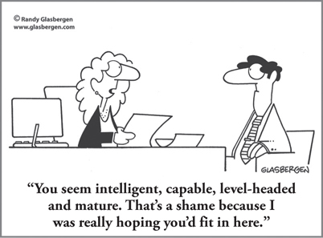

CHAPTER 10
Productivity Through Fit: Individual, Job, and Assignment Alignment

CHAPTER HIGHLIGHTS
 High productivity is based on the combination of individuals being stimulated by particular work, being aligned with that work in their jobs, and addressing any remaining blind spots.
High productivity is based on the combination of individuals being stimulated by particular work, being aligned with that work in their jobs, and addressing any remaining blind spots.
 Understanding the mental preferences of individuals and the mental requirements of the work they do is a critical management skill and priority in order to achieve maximum effectiveness on the job.
Understanding the mental preferences of individuals and the mental requirements of the work they do is a critical management skill and priority in order to achieve maximum effectiveness on the job.
 In most roles, “fit” really means a combination of alignment with existing skills, challenges and skill building for continued growth, and having the tools and strategies to situationally address the areas that are required for the job but are outside the person’s comfort zone.
In most roles, “fit” really means a combination of alignment with existing skills, challenges and skill building for continued growth, and having the tools and strategies to situationally address the areas that are required for the job but are outside the person’s comfort zone.
 Thinking preferences also affect which workflow and productivity strategies will be most effective for the individual.
Thinking preferences also affect which workflow and productivity strategies will be most effective for the individual.
 Using a Whole Brain approach to align individuals with their work and providing productivity tools that are aligned with their thinking preferences results in significant increases in productivity.
Using a Whole Brain approach to align individuals with their work and providing productivity tools that are aligned with their thinking preferences results in significant increases in productivity.
For as long as he could remember, Sean had wanted to work in advertising. When he landed an account executive position at a top firm, he was thrilled. It wasn’t long, however, before his outlook changed.
A creative thinker with a big imagination and an even bigger dislike of details and structure, Sean was struggling to find satisfaction in his new role. While he enjoyed talking to the clients and the creatives about plans and ideas, the majority of his time was spent researching information about clients and their products, preparing proposals and progress reports, and trying to keep track of budgets and timelines. His boss was constantly on him about his record keeping and invoicing, and overall, he was floundering. It seemed to take all of his energy and then some to get his work done.
Sean couldn’t understand it. Here he was, finally in his dream job, but he was unhappy, frustrated, and bored, and probably on the verge of being fired.
His manager didn’t get it either. Sean had drive, enthusiasm, and impressive credentials. When she’d brought him on board, she’d thought he had all the makings of a hotshot ad executive, but he was barely getting by. The human resources director suggested that Sean complete the HBDI assessment to see if it would reveal any clues as to what was going on.
Looking at his profile results, they discovered that Sean‘s preferences were strongly in the D quadrant. Not only that, but he had a low preference, actually an avoidance, for detail-oriented, B-quadrant work. No wonder he was struggling. When it came to the majority of the work he was expected to perform, it was a total mental mismatch.
The firm’s managers didn’t want to lose Sean. They saw his potential, and when they found the opportunity to move him into a position in Creative where he was not only more energized and satisfied with his work, he excelled. In fact, his very first campaign won the firm a national advertising award.
Did this shift mean that Sean no longer had to deal with details? Budgets? Follow-up? No! But he was able to find the motivation and energy to deal with those tasks now that it was all in service of work that he clearly loved. It made all the difference.
Engagement, Productivity, and Job Fit
People gravitate toward occupations that allow them to exercise their preferred modes of knowing. That’s why we can develop HBDI occupational categories that contain “typical” profiles for certain kinds of jobs. But once employees occupy jobs—specific positions in specific organizations—they often find themselves dealing with a workload that demands they spend large blocks of time, possibly even a majority, operating in areas of lesser preference or even avoidance.
Such mental mismatches, persisting over the years, sharply increase stress and anxiety, which can and do raise not only the incidence of flu, colds, and absenteeism, but also that of heart attacks, nervous breakdowns, alcoholism, and substance abuse. Even when their motivation to do a job well is high, people who are mentally mismatched find it difficult to keep up with the job’s demands, and they must often work extra hours to accomplish what others can do in less time. It can become not just a work burden but a personal and family one as well.
Sound overdramatic? Consider the number of employees who leave their jobs or are actively looking for new ones every year, in both bad and good economic times. Engagement data from Gallup show that only 30 percent of employees are actively engaged, and disengagement rates are increasing at an alarming pace as the “do more with less” mentality has piled on more responsibilities and tasks, whether or not they have anything to do with what the person does best. The impact isn’t just on the individual; the organization also loses out in multiple ways. The most obvious is the lost productivity and discretionary effort of those who are doing just what they have to do in order to get by. Actively disengaged employees can also have a negative influence on other employees and push customers away. Turnover, quality, safety, profitability … the list of costs goes on and on.
As I touched upon in Chapter 9, I believe that engagement, and thus individual and organizational productivity, starts with a combination of people being stimulated by a particular kind of work and being aligned with that work in their job. By stimulated, I mean having work that is so interesting to them that if they had the opportunity to choose, they would select it for its inspiration and pleasure because the performance of it is rewarding in itself. This work is not necessarily the easiest—it is often the most challenging, but in a way that the individual finds inherently satisfying, Desire for this type of work is at the top of Maslow’s hierarchy of needs;1 it’s called self-actualization. The opportunity to perform stimulating work is a major ingredient of motivation, since motivation always comes from within a person. Allowing people access to work that stimulates them pulls them into performing at their highest level of work performance. Just think of the kind of productivity, satisfaction, and fulfillment that both the individuals and their managers will enjoy as a result.
Making a Match
One of the advantages of the Whole Brain System is the capability of diagnosing the mental requirements for work. Using the Whole Brain Model as a diagnostic tool provides management with a way of diagnosing the mentality of the work elements that make up a job assignment. A job can be thought of as an aggregate of tasks composed of work elements. Each work element can be diagnosed in terms of the mentality required to perform it. This means that it is possible to profile and even design the total job on the basis of the distribution of mental requirements needed to perform that job at an optimum level. For example, analytic work elements, such as analyzing the information in a financial report, are A-quadrant in their mentality. Detailed administrative work elements, such as filling out and processing applications and forms, are B-quadrant in their mentality. Interpersonal-type work elements, such as contacting a customer, are C-quadrant in their mentality. And work elements that require strategic thinking, such as brainstorming on a more effective way to beat the competition or innovating products, are D-quadrant in their mentality. Once a pro forma profile of the job is complete, it can be compared to the individual’s mental preferences, and the degree of alignment can easily be determined.
Let’s take a look at an example of an employee’s HBDI Profile compared to pro forma profiles of a range of jobs, from fully aligned to totally nonaligned (see Figure 10-1).
FIGURE 10-1 An employee’s HBDI Profile compared with HBDI pro-forma profiles of jobs ranging from aligned to nonaligned with the employee’s preferences.
It is easy to come to the conclusion that when the employee’s mental preferences are in alignment with the job’s mental requirements, everybody wins. The better the alignment, the higher the productivity potential. When the managerial climate is supportive of the alignment initiative, higher productivity is more likely.
When working with business audiences, I sometimes ask them to pick a percentage figure describing their own productivity, then write down this private information on a piece of paper and stick it in a pocket. Later on, after talking about the business applications of my work and the opportunity to design jobs and assign people to those jobs, I ask them to write on another piece of paper what their productivity could be if their work offered them the opportunity to be inspired and stimulated, and to put this piece of paper in another pocket. At the end of the day, just before the session ends, I’ll say, “Oh, incidentally, what are you going to do about those two pieces of paper in your pocket?” People volunteer that the difference between the two numbers ranges from 10 to 50 percent—with the higher number always being on that second piece of paper.
Based on this and other observations, I believe the potential productivity gain in the average business group is 30 percent. To check this out, just look inward. What would a perfect job match do to your productivity? What would stimulating work do to your job satisfaction?
When Mental Mismatches Can’t (or Shouldn’t) Be Avoided
As Sean’s story and my experience with business audiences show, a high degree of alignment between the individual’s preferences and the thinking demands of the job is the ideal situation. But it’s not always possible or practical to reassign people or completely redesign jobs. The key is understanding how the person’s preferences line up with the job, then helping the individual find ways to be as effective as possible regardless. While some degree of alignment is important, the reality is that all of us work outside our zones of preference to some extent every day. But we can find ways to adjust the work to fit our mental preferences and competencies.
From a managerial standpoint, the first step is realizing that this person has a potential blind spot and taking steps to help him or her address it through such support as job aids, training, or coaching. The manager also needs to recognize the degree of energy, self-motivation, and passion that will be required if the employee has a lack of preference or an avoidance for particular aspects of the job. Quite often, the employees themselves have ideas about how to better perform the work based on how they prefer to think. Managers should encourage employees to take the initiative to make changes in the way the work is performed as long as the necessary outcomes are achieved. The productivity and work satisfaction gains can be enormous.
And what about those times when you want to put someone in a stretch mode? Many new leader and high-potential development programs include job rotation assignments that intentionally move people around so they can benefit from the exposure to work that specifically isn’t in their sweet spots. The idea is to broaden the person’s thinking so that he or she can become a more well-rounded leader, but the key here is stretch, not flip-flop. If the assignment requires the person to stretch while still honoring enough of his or her preferences, there is opportunity for growth. If it’s entirely within an area of very low preference or avoidance, there is a good chance for frustration and discouragement, which will be easier to bear only if the individual is highly motivated to learn and knows that this is only temporary.
When the goal is to stretch, first ask, is the person motivated? It will take a good amount of motivation and energy to be successful. Second, take the person’s strengths and blind spots into account as you coach him or her to handle the responsibilities.
How to Turn Misalignment Around
My advice is to try assessing the work and those doing it in a small work group where job design issues and job assignment practices are sufficiently flexible to accommodate such a demonstration. In our company, we often pull in employees from different departments to get a good mix of mental preferences for a project. Sometimes a finite project will reveal preferences for work and competencies much more visibly, especially if the team leader is there to witness this in action. The following tips can help you get started. If you aren’t in a managerial position, talk to your manager or supervisor and team up with the human resources department to problem-solve your misalignment issues.
Design tasks, projects, and jobs with mental preferences in mind:
• Analyze the work elements of tasks, projects, and jobs according to the quadrant they call for.
• Set priorities to identify the most important, primary elements required and the percentage time allocation for each, so you can make sure that the bulk of the time the person spends involves activities that call on the same mental modes as the most important work.
• Refrain from casually or inadvertently adding responsibilities to that position—even for administrative convenience—for any significant or undefined period of time if they unbalance the mental shift of the job, that is, shift it away from the quadrant required to achieve the purpose at hand, unless you have no other choice or the individual seeks to develop and is highly motivated to do so.
Encourage work and preference matching on an ongoing basis:
• Educate employees at all levels about how their thinking preferences relate to their productivity, effectiveness, and satisfaction.
• Cooperate with employees’ efforts to adjust job tasks (consistent, of course, with getting done the job that has to get done). As discussed in Chapter 9, this is one of the key ways you can help unleash employee motivation.
• Provide productivity tools that align with the person’s thinking preferences, or give the person freedom to select the tools that work best for him or her.
• Address any blind spots that come from areas of low preference by providing training, support, and other tools and, wherever possible, ensuring that the employee sees these activities as necessary to pursue in the service of successfully achieving his or her preferred work.
• Measure the resulting productivity gains.
Most work—even physical labor—is largely mental. It stands to reason, then, that we will be most productive if we are doing work that calls for the mental modes we most strongly prefer. But there will also be some degree of stretch in any job; this is never an excuse for poor performance. It’s up to managers to help people use their preferences in the service of the work that needs to be done, and it’s up to the individual to take the initiative on his or her own behalf. When there is enough alignment in place, and the individual is motivated to develop enough skills to address the inevitable stretch requirements, the possibilities for productivity improvement are significant, providing the organization with an important competitive advantage.
SO WHAT?
 All too frequently, jobs are assembled without regard for the mental requirements it takes to perform them, and employees are placed in those jobs without regard for their mental preferences and the need for alignment.
All too frequently, jobs are assembled without regard for the mental requirements it takes to perform them, and employees are placed in those jobs without regard for their mental preferences and the need for alignment.
 Nonalignment of employees with their work leads to poor performance, low productivity, and low job satisfaction.
Nonalignment of employees with their work leads to poor performance, low productivity, and low job satisfaction.
 Every job requires some degree of stretch; it’s up to the manager to recognize and coach employees who are in stretch mode, and it’s up to the employees to take the initiative to use their preferences in service of the work that needs to be done and seek the necessary development to adequately address those areas of lesser preference.
Every job requires some degree of stretch; it’s up to the manager to recognize and coach employees who are in stretch mode, and it’s up to the employees to take the initiative to use their preferences in service of the work that needs to be done and seek the necessary development to adequately address those areas of lesser preference.